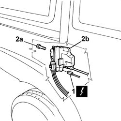
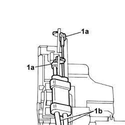
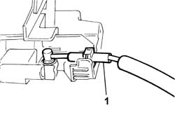

7020N21 SLIDING SIDE DOOR CENTRAL LOCKING MOTOR/LOCK ASSEMBLY, LEFT OR RIGHT - R.R WITH DOOR PANEL REMOVED
- Path
- Procedures > 70 FITTINGS > 7020 LOAD CARRYING COMPARTMENT DOORS > 7020N sliding side door central locking > 7020N21 SLIDING SIDE DOOR CENTRAL LOCKING MOTOR/LOCK ASSEMBLY, LEFT OR RIGHT - R.R WITH DOOR PANEL REMOVED
- Kind
- repair procedure (removal / refitting; the operation number is the code)
- Applies to
- all engines; all production periods
- Interactive page
- https://sloeber94.github.io/elrnDB-fDbl/en/#/2585093
Applies to: all engines; all production periods
 Removing
Removing
 Refitting
RefittingOp. 7020D18 EXTERIOR HANDLE WITH LOCK BARREL - R+R
1. Disconnect the central locking electrical connector.
 | Name | Connector |
|---|---|---|
1 | Left rear door lock geared motor |
| Name | Connector |
|---|---|---|
1 | Right rear door lock geared motor |
2. Undo the fixing bolts (2a) and remove the lock gearmotor (2b) from its seating, complete with flexible control cables.

Applies to: all engines; all production periods
1. Open the safety clips (1a) and disconnect the flexible control cables (1b) for opening/closing the door via the outer handle.

Applies to: all engines; all production periods
1. Prise off and remove the flexible control cable for opening/closing the door via the inner handle.

Applies to: all engines; all production periods
Refitting
RemovingCheck that the flexible control cables for opening/closing the door via the outer and inner handle are not damaged.
Fit, in their seatings, the flexible control cables for opening/closing the door.
Fit the door locking gearmotor complete with flexible control cables and tighten the bolts to the specified torque.
 | Fastening | Component | Ø | Value (daNm) |
|---|---|---|---|---|
- | Bolt | SLIDING./ SIDE DOOR LOCK. MOTOR ASSEMBLY . | M8 | 1.6 |
Connect the central locking electrical connector.
| Name | Connector |
|---|---|---|
- | Left rear door lock geared motor |
| Name | Connector |
|---|---|---|
- | Right rear door lock geared motor |